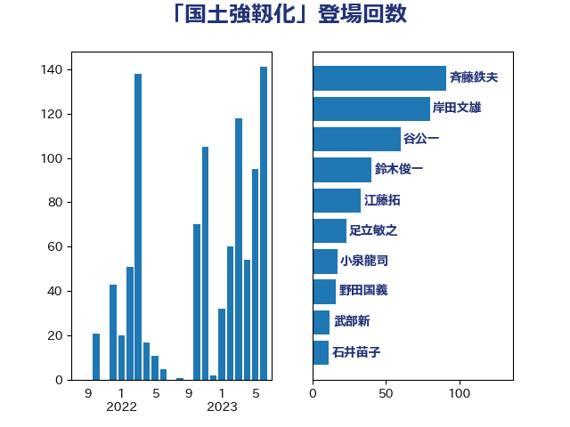

単語「国土強靱化」

| 赤羽一嘉 | 公明党 | 46 回 |
| 斉藤鉄夫 | 公明党 | 32 回 |
| 麻生太郎 | 自由民主党 | 32 回 |
| 菅義偉 | 自由民主党 | 29 回 |
| 岸田文雄 | 自由民主党 | 28 回 |
| 武田良太 | 自由民主党 | 23 回 |
| 鈴木俊一 | 自由民主党 | 20 回 |
| 大口善徳 | 公明党 | 18 回 |
| 足立敏之 | 自由民主党 | 18 回 |
| あかま二郎 | 自由民主党 | 16 回 |
| 金子恭之 | 自由民主党 | 15 回 |
| 野上浩太郎 | 自由民主党 | 13 回 |
| 岡本三成 | 公明党 | 10 回 |
| 杉久武 | 公明党 | 10 回 |
| 石井啓一 | 公明党 | 9 回 |
| 盛山正仁 | 自由民主党 | 8 回 |
| 赤澤亮正 | 自由民主党 | 8 回 |
| 塩田博昭 | 公明党 | 7 回 |
| 安江伸夫 | 公明党 | 7 回 |
| 滝波宏文 | 自由民主党 | 7 回 |
| 城井崇 | 立憲民主党 | 6 回 |
| 藤川政人 | 自由民主党 | 6 回 |
| 里見隆治 | 公明党 | 6 回 |
| 高橋光男 | 公明党 | 6 回 |
| 三木亨 | 自由民主党 | 5 回 |
| 大野泰正 | 自由民主党 | 5 回 |
| 岩本剛人 | 自由民主党 | 5 回 |
| 浅野哲 | 国民民主党 | 5 回 |
| 浜地雅一 | 公明党 | 5 回 |
| 簗和生 | 自由民主党 | 5 回 |
| 進藤金日子 | 自由民主党 | 5 回 |
| 青木愛 | 立憲民主党 | 5 回 |
| 高木啓 | 自由民主党 | 5 回 |
| 中西祐介 | 自由民主党 | 4 回 |
| 大野敬太郎 | 自由民主党 | 4 回 |
| 小宮山泰子 | 立憲民主党 | 4 回 |
| 小寺裕雄 | 自由民主党 | 4 回 |
| 小里泰弘 | 自由民主党 | 4 回 |
| 平木大作 | 公明党 | 4 回 |
| 津島淳 | 自由民主党 | 4 回 |
| 渡辺猛之 | 自由民主党 | 4 回 |
| 熊田裕通 | 自由民主党 | 4 回 |
| 秋野公造 | 公明党 | 4 回 |
| 美延映夫 | 日本維新の会 | 4 回 |
| 西村康稔 | 自由民主党 | 4 回 |
| 鈴木英敬 | 自由民主党 | 4 回 |
| 高橋英明 | 日本維新の会 | 4 回 |
| こやり隆史 | 自由民主党 | 3 回 |
| 中川宏昌 | 公明党 | 3 回 |
| 今枝宗一郎 | 自由民主党 | 3 回 |
| 冨樫博之 | 自由民主党 | 3 回 |
| 加田裕之 | 自由民主党 | 3 回 |
| 和田義明 | 自由民主党 | 3 回 |
| 宮路拓馬 | 自由民主党 | 3 回 |
| 平口洋 | 自由民主党 | 3 回 |
| 松山政司 | 自由民主党 | 3 回 |
| 武部新 | 自由民主党 | 3 回 |
| 浜口誠 | 国民民主党 | 3 回 |
| 熊谷裕人 | 立憲民主党 | 3 回 |
| 甘利明 | 自由民主党 | 3 回 |
| 竹内譲 | 公明党 | 3 回 |
| 舞立昇治 | 自由民主党 | 3 回 |
| 藤田文武 | 日本維新の会 | 3 回 |
| 三浦信祐 | 公明党 | 2 回 |
| 伊藤渉 | 公明党 | 2 回 |
| 佐々木紀 | 自由民主党 | 2 回 |
| 大西英男 | 自由民主党 | 2 回 |
| 奥野総一郎 | 立憲民主党 | 2 回 |
| 山口那津男 | 公明党 | 2 回 |
| 山添拓 | 日本共産党 | 2 回 |
| 朝日健太郎 | 自由民主党 | 2 回 |
| 森屋隆 | 立憲民主党 | 2 回 |
| 江田憲司 | 立憲民主党 | 2 回 |
| 河西宏一 | 公明党 | 2 回 |
| 深澤陽一 | 自由民主党 | 2 回 |
| 清水真人 | 自由民主党 | 2 回 |
| 片山さつき | 自由民主党 | 2 回 |
| 田畑裕明 | 自由民主党 | 2 回 |
| 石井苗子 | 日本維新の会 | 2 回 |
| 石川博崇 | 公明党 | 2 回 |
| 稲津久 | 公明党 | 2 回 |
| 茂木敏充 | 自由民主党 | 2 回 |
| 菅家一郎 | 自由民主党 | 2 回 |
| 萩生田光一 | 自由民主党 | 2 回 |
| 西田実仁 | 公明党 | 2 回 |
| 豊田俊郎 | 自由民主党 | 2 回 |
| 近藤和也 | 立憲民主党 | 2 回 |
| 酒井庸行 | 自由民主党 | 2 回 |
| 野田聖子 | 自由民主党 | 2 回 |
| 鈴木貴子 | 自由民主党 | 2 回 |
| 高見康裕 | 自由民主党 | 2 回 |
| 下村博文 | 自由民主党 | 1 回 |
| 中根一幸 | 自由民主党 | 1 回 |
| 中西健治 | 自由民主党 | 1 回 |
| 二階俊博 | 自由民主党 | 1 回 |
| 井上英孝 | 日本維新の会 | 1 回 |
| 今井絵理子 | 自由民主党 | 1 回 |
| 伊佐進一 | 公明党 | 1 回 |
| 伊藤孝恵 | 国民民主党 | 1 回 |
| 伴野豊 | 立憲民主党 | 1 回 |
| 佐々木さやか | 公明党 | 1 回 |
| 加藤勝信 | 自由民主党 | 1 回 |
| 古川康 | 自由民主党 | 1 回 |
| 古賀之士 | 立憲民主党 | 1 回 |
| 吉川元 | 立憲民主党 | 1 回 |
| 吉田忠智 | 立憲民主党 | 1 回 |
| 堀井巌 | 自由民主党 | 1 回 |
| 塩川鉄也 | 日本共産党 | 1 回 |
| 宮内秀樹 | 自由民主党 | 1 回 |
| 宮崎雅夫 | 自由民主党 | 1 回 |
| 小泉進次郎 | 自由民主党 | 1 回 |
| 尾崎正直 | 自由民主党 | 1 回 |
| 山下雄平 | 自由民主党 | 1 回 |
| 山崎誠 | 立憲民主党 | 1 回 |
| 山本博司 | 公明党 | 1 回 |
| 山東昭子 | 自由民主党 | 1 回 |
| 山田賢司 | 自由民主党 | 1 回 |
| 山谷えり子 | 自由民主党 | 1 回 |
| 岩田和親 | 自由民主党 | 1 回 |
| 岸信夫 | 自由民主党 | 1 回 |
| 川崎ひでと | 自由民主党 | 1 回 |
| 川田龍平 | 立憲民主党 | 1 回 |
| 工藤彰三 | 自由民主党 | 1 回 |
| 市村浩一郎 | 日本維新の会 | 1 回 |
| 平沼正二郎 | 自由民主党 | 1 回 |
| 後藤茂之 | 自由民主党 | 1 回 |
| 新妻秀規 | 公明党 | 1 回 |
| 新谷正義 | 自由民主党 | 1 回 |
| 日下正喜 | 公明党 | 1 回 |
| 本田顕子 | 自由民主党 | 1 回 |
| 杉本和巳 | 日本維新の会 | 1 回 |
| 柳本顕 | 自由民主党 | 1 回 |
| 根本匠 | 自由民主党 | 1 回 |
| 森まさこ | 自由民主党 | 1 回 |
| 森山浩行 | 立憲民主党 | 1 回 |
| 森本真治 | 立憲民主党 | 1 回 |
| 榛葉賀津也 | 国民民主党 | 1 回 |
| 横沢高徳 | 立憲民主党 | 1 回 |
| 武井俊輔 | 自由民主党 | 1 回 |
| 浅田均 | 日本維新の会 | 1 回 |
| 田村憲久 | 自由民主党 | 1 回 |
| 田村智子 | 日本共産党 | 1 回 |
| 石川大我 | 立憲民主党 | 1 回 |
| 磯崎仁彦 | 自由民主党 | 1 回 |
| 福田昭夫 | 立憲民主党 | 1 回 |
| 福重隆浩 | 公明党 | 1 回 |
| 稲田朋美 | 自由民主党 | 1 回 |
| 笠井亮 | 日本共産党 | 1 回 |
| 細田健一 | 自由民主党 | 1 回 |
| 芳賀道也 | 国民民主党 | 1 回 |
| 葉梨康弘 | 自由民主党 | 1 回 |
| 藤丸敏 | 自由民主党 | 1 回 |
| 藤原崇 | 自由民主党 | 1 回 |
| 藤木眞也 | 自由民主党 | 1 回 |
| 西岡秀子 | 国民民主党 | 1 回 |
| 西田昌司 | 自由民主党 | 1 回 |
| 輿水恵一 | 公明党 | 1 回 |
| 野村哲郎 | 自由民主党 | 1 回 |
| 野田国義 | 立憲民主党 | 1 回 |
| 金田勝年 | 自由民主党 | 1 回 |
| 鈴木敦 | 国民民主党 | 1 回 |
| 長谷川岳 | 自由民主党 | 1 回 |
| 阿部知子 | 立憲民主党 | 1 回 |
| 青山周平 | 自由民主党 | 1 回 |
| 須藤元気 | 無所属 | 1 回 |
| 馬場成志 | 自由民主党 | 1 回 |
| 高野光二郎 | 自由民主党 | 1 回 |